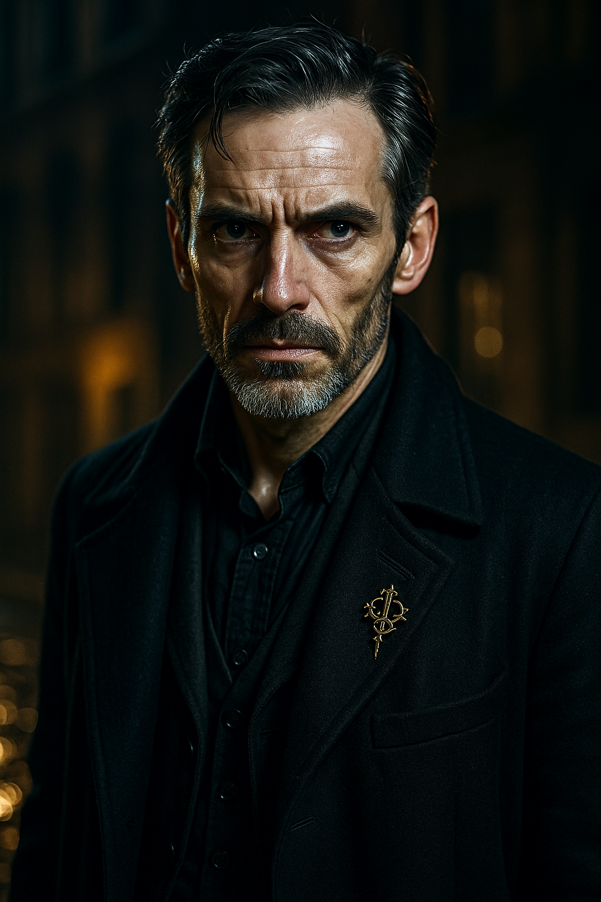

Characteristics
| Characteristic | Regular | Half | Fifth |
|---|---|---|---|
| STR | |||
| CON | |||
| DEX | |||
| INT | |||
| SIZ | |||
| POW | |||
| APP | |||
| EDU |
Derived
| Attribute | Max | Current |
|---|---|---|
| HP | ||
| MP | ||
| Luck | — | |
| Sanity |
Combat
| Attribute | Value |
|---|---|
| Move | |
| Build | |
| Damage Bonus | |
| Dodge (Regular) | |
| Dodge (Half) | |
| Dodge (Fifth) |
Status
- [ ] Temporary Insanity
- [ ] Indefinite Insanity
- [ ] Major Wound
- [ ] Unconscious
- [ ] Dying
Personal Description: A medical man of indeterminate age — precise in movement, sharp in observation, and carrying the bearing of a surgeon who has spent as much time in the field as in the operating theatre. His hands are steady when they need to be, which is not always.
Traits: Methodical, resourceful, and capable of cold calculation under pressure. Beneath the clinical exterior lies a poetic nature — Italian verse, a half-step dance with a nervous companion, charm deployed as readily as a scalpel. The psychological wounds from Venice, from Brenner’s attic, and from the Graben run deeper than the physical ones.
Ideology & Beliefs: A member of the Order_of_St_Aelfric, committed to opposing the Aeternum Choir’s designs. The Order sent him to Venice as a consulting surgeon and received back an operative.
Significant People: Dr_Leopold_Fischbein (legal asset who secured his release from custody), Countess von Thun (social asset, private invitation extended), Colonel_Henri_Moreau (deceased — died beside Varrio in the Graben ambush, the source of his deepest psychological wound).
Meaningful Locations: Widow Katz’s boarding house, Leopoldstadt (where Brenner died); the Graben (where Moreau was killed); Palais_Lobkowitz ballroom (where fire doctrine was born); Thaliastrasse 12 garret observation post (discovered by Varrio).
Treasured Possessions: Aelfric_Cravat_Pin — symbol of Order initiation.
| Skill | Base | Regular | Half | Fifth |
|---|---|---|---|---|
| Medicine | 01 | |||
| First Aid | 30 | |||
| Natural Philosophy | 01 | |||
| Charm | 15 | |||
| Fast Talk | 05 | |||
| Spot Hidden | 25 | |||
| Stealth | 20 | |||
| Listen | 20 | |||
| Navigate | 10 | |||
| Language (German) | 01 | |||
| Language (Italian) | 01 | |||
| Disguise | 05 | |||
| Fighting (Brawl) | 25 | |||
| Dodge | DEX/2 |
Known Competencies (no numeric values recorded):
- Surgical and anatomical expertise — consulting surgeon for the Order; the party’s primary medical resource
- Counter-surveillance — confronted a brown-coated watcher through passive intimidation (stale crackers at the Am Hof fountain); spotted courier networks inside the Hofburg
- Fire doctrine — improvised incendiary weapons from chair legs, tablecloth, and cognac; killed two Wachter with fire at the Masquerade
- Social charm — charmed Countess von Thun’s dance card clear, bonded with Signor Morosi over moustache wax, rearranged Sternberg’s duel terms over shared Tokaji
- Interrogation (unconventional) — botched first aid on Adler produced more intelligence than deliberate intimidation
- Languages — functional German (lodging inquiries, tavern orders, assumed-name registration); Italian (love poetry under dissociation)
Session 5 — Graben Ambush (7 August 1814): Stabbed in the right thigh by a Bauer brother during a carriage chase through the Graben. The wound was stitched at a police infirmary. Varrio was limping through Session 7 but remained mobile and operational.
Session 8 — Champagne Glass (8 August 1814, Masquerade): During a SAN failure triggered by Anna’s performance, Varrio dissociated and bit clean through a champagne glass, filling his mouth with crystal shards and blood. Glass cuts to lips, tongue, and gums. Self-inflicted under supernatural duress.
PTSD — Moreau’s Death (Session 5 onward): Varrio witnessed Colonel Moreau stabbed and killed beside him in the Graben ambush. The trauma manifests as a collapse response to creatures associated with the killing — he fainted at the sight of the Nightgaunt in Session 6. The connection between “creatures” and Moreau’s death is the psychological wound he carries deepest.
Dissociative Episodes (Sessions 3, 4, 8): Varrio has experienced multiple dissociative breaks under stress: freezing after a servant dropped a tray (Session 3, recovered via Italian poetry), running across the Imperial Reception ballroom during temporary insanity (Session 4, triggered by Beethoven’s Seventh), and biting through a champagne glass during Anna’s performance at the Masquerade (Session 8). The frequency of these episodes suggests ongoing instability.
Engine Nightmares (Session 10): The Engine dreamed back at Varrio — Brenner in the attic with his neck at the angle Varrio put it at, brass pipes growing through the plaster, the sound of a last gasp made mechanical. Then a pillow pressed over Moreau’s face. Varrio woke screaming and bolted into the street. The nightmares connect his two killings — the deliberate (Brenner) and the witnessed (Moreau) — through the Engine’s harmonic architecture.
Engine-Induced Paranoid Episode (Session 13): Inside the University, the Engine’s vibrations triggered a bout of acute insanity. Varrio became convinced that Georgiana was a traitor and attempted to drag her out of the building. The Russians physically restrained him. He came back to himself mortified. This follows the magic mania episode from Session 12 and represents a continued deterioration of his SAN under the Engine’s proximity. His psychological stability in close proximity to the Engine is a live concern for the finale.
No tomes read. No spells learned.
The Harmonic Engine (Session 2 — described, not witnessed): Brenner’s confession in the Leopoldstadt attic — a thirty-foot biomechanical instrument built from living tissue, voices cut from conscious throats. Cost: 3 SAN (plus 1 SAN for the subsequent murder of Brenner).
The Nightgaunt (Session 6 — Palais_Kinsky): A faceless, oily-skinned creature that crawled down the building face-first, leaving frost in its wake. It shattered Charlotte’s window and attacked the party. Varrio fainted at the sight due to PTSD from Moreau’s death. The creature was killed by Emma (who bit its neck) and Adrien (who pinned it with a sword). It dissolved into black goo.
Harmonische Wachter (Session 8-9 — Palais_Lobkowitz): Bronze-scaled, almost-human creatures deployed by Adler via the command tuning fork. Varrio killed two with fire — one by thrusting a torch into its jaw on the ballroom floor, another by setting it ablaze in the courtyard. A third was deployed but never reached him. Fire is their hard counter, and Varrio is the one who proved it.
Engine Resonance (Sessions 4, 7, 8): The Engine’s frequency has been detected through music twice in Varrio’s presence — in Beethoven’s Seventh at the Imperial Reception (temporary insanity) and in Anna Lindqvist’s singing at the Masquerade (dissociation, champagne glass). The Engine also reached him through nightmares (Session 10).
| Weapon | Skill % | Damage | Attacks | Range | Ammo | Malf |
|---|---|---|---|---|---|---|
| Unarmed | 1D3+DB | 1 | — | — | — | |
| Improvised Torch | Special (fire) | 1 | Melee | — | — | |
| Improvised Cudgel (stool leg) | 1D6+DB | 1 | Melee | — | — |
- Emma_Wentworth — Wiltshire gentlewoman. The woman who bit a Nightgaunt.
- Georgiana_Wentworth — Emma’s sister. Sharp-minded researcher and tactical combatant. Carries the command fork.
- Adrien_de_Montferrand — French Viscount. Hosts the party. Led the Trautmannsdorff extraction.
- Freddy_Cavendish — The Honourable Frederick Cavendish. Social connections and operational logistics.
- Katherine_Ward — Order operative. Spy, lockpick, infiltrator. Dispatched by Harcourt.
At Thaliastrasse 12 as of late afternoon, 9 August 1814. Physically functional — thigh wound healing, glass cuts minor. Carried the heaviest composite operational load through Session 9: extraction, courtyard, carriage, safehouse, cellar. Discovered the garret observation post with its rooftop escape hatch spanning three houses.
Serving as Thomas’s second for the duel against Graf von Sternberg — dawn, 10 August, pistols, Linienwallgasse. Rescheduled Countess von Thun’s evening invitation to 10 August.
Liesel_Hartmann remains a live complication — she approached Varrio at the Masquerade about Brenner’s disappearance and was denied. She is inside the University and may confront him when the party reaches the anatomical theatre.
{Player-facing notes. Protected — skills never modify.}
Relationships
- Member of Order of St Aelfric — Consulting surgeon for the Order
- Enemy of Confraternita del Bel Canto — Disrupted the Venice cell from within before joining main party
- Located at Thaliastrasse 12 Safehouse — Current lodging as of 9 August 1814
- Knows Emma Wentworth — Party member
- Knows Georgiana Wentworth — Party member; shared the Italian poem dissociation moment; she witnessed his recovery
- Knows Adrien de Montferrand — Party member, Order member
- Knows Katherine Ward — Party member, Order operative
- Knows Freddy Cavendish — Party member; Freddy recruited Fischbein who secured Varrio's release
- Knows Dr Leopold Fischbein — Viennese lawyer who secured his release from custody
- Knows Maria von Thun — Countess charmed at the Masquerade; private evening invitation rescheduled to 10 August
- Antagonist of Maximilian von Sternberg — Punched Sternberg at the Masquerade; serving as Thomas's second in the resulting duel
- Knows Liesel Hartmann — Brenner's assistant; approached Varrio at the Masquerade about Brenner's disappearance; Varrio denied knowledge
Equipment
Gear & Possessions:
- Surgical instruments (carried from Venice)
- Aelfric_Cravat_Pin
- Improvised torch materials (doctrine established: tablecloth, chair leg, spirits)
Wealth:
| Attribute | Value |
|---|---|
| Spending Level | |
| Cash | |
| Assets |
Chapter 2.5 — Venice
The work in Venice was solitary, precise, and largely unrecorded. Dr Septimus Harrowmont — Varrio to the few who knew him by anything other than his professional name — arrived in the city with surgical instruments and Order credentials, and left it with the Confraternita_del_Bel_Canto in disarray. What he did there, how he dismantled the cell from within, and what it cost him remained his own affair. The Order had sent a consulting surgeon to Venice and received back an operative.
He joined the survivors of Lyon at the Puyrault estate just before departure for Vienna. He carried with him the quiet competence of a man who had learned, somewhere between the scalpel and the mission brief, that survival required more than knowledge. The road to Vienna lay ahead, and Varrio walked it with people who had buried four of their own in French soil.
Session 1 — Arrival in Vienna
Vienna announced itself with church bells, four languages, and a military band playing a waltz that offended every British sensibility in the party. At the Linienwall customs gate, Thomas vouched for the group when Inspector Novak’s men discovered an extensive arsenal in their coaches. Varrio made lodging inquiries in German — a useful skill in a city where the party’s command of the local tongue was otherwise limited — and contributed to the strategy discussions that followed Dr Falkner’s intelligence briefing at the Naturhistorisches_Institut. The briefing was the first time the investigators heard the name Herzfeld, the first time they learned of the vanished musicians, and the first time someone described the sealed anatomical theatre beneath the University. Varrio listened with the clinical attention of a man whose profession involved opening bodies, and understood at once what “acoustic research” in an anatomical theatre implied.
He carried no personal letter of credit, relying on group funds. The surgeon travelled light.
Session 2 — The Opera and the Dead Man
The party split for the evening of August 4th. Charlotte, Georgiana, and Varrio stayed behind from the opera to hunt Brenner, Herzfeld’s expelled assistant. At Der Schiefe Schornstein in the Leopoldstadt, Varrio ordered the manliest drink the tavern sold and knocked back a blue-flamed spirit that Charlotte could not bring to her lips. The barkeep directed them to Widow Katz’s boarding house — the yellow door, two streets over — with the warning that men with “killing eyes” in brown coats had already come asking.
In the attic, Brenner was a wreck of empty bottles and trembling hands. He told them everything: a thirty-foot biomechanical instrument built from living tissue, voices cut from conscious throats, a paralytic that kept the victims aware. The Harmonic Engine. The description cost Varrio three points of sanity, and he fainted from the horror of it. When he recovered, Charlotte and Georgiana had left the room. And Varrio, alone with a man who knew too much and could not be trusted to keep silent, made a cold calculation. He attempted suffocation with a pillow. Brenner squirmed free. Varrio yanked the covers. Brenner slid off the bed, struck the bedframe, and his neck broke. Varrio staged it as an accident — a brandy bottle positioned under the dead man’s arm — and walked out with wild eyes and five fewer points of sanity than he had entered with. “We’re good,” he told the women in the corridor. “Let’s go.”
The murder was the surgeon’s first act of deliberate violence in Vienna. It would not be the last.
Session 3 — Whispers and Waltzes
The afternoon of August 5th brought Varrio’s first reckoning with what he had done. A servant dropped a tray in the Palais lounge and the crash sent him into full dissociation — frozen, unresponsive, his mind somewhere between Brenner’s attic and the present moment. Georgiana tried to bring him back. What finally reached him was a fragment of an Italian love poem, spoken aloud in a voice that surprised them both — crimson flowers, summer breezes, kisses. The recitation revealed a poetic nature that the surgeon’s clinical exterior had concealed entirely. Georgiana was charmed. The servants were bewildered. Varrio was still shaking.
At the Countess von Thun’s salon that evening, Varrio danced with Madame_Delacroix and deliberately stayed half a step behind to steady her nerves. When Graf von Sternberg arrived in full Hussar regalia and Thomas’s jealousy over Emma threatened to crack the evening open, Varrio intervened to calm him. The night ended with a street urchin pressing a folded note into his hand: Sie haben ihn gefunden. They found him. The cult knew what had happened in that attic, and they knew who had been there.
Session 4 — The Imperial Reception
The morning of August 6th found Varrio securing Italian-Sardinian delegation invitations by bonding with Signor Morosi over moustache wax — a display of commitment to craft that won the man over entirely. Then he turned his attention to the brown-coated watcher at the Am Hof fountain. Varrio sat down beside him, ate stale crackers in pointed silence, and waited. The watcher left. It was counter-surveillance conducted through sheer awkwardness, and it worked.
At the Imperial Reception that evening, Beethoven’s Seventh Symphony tore the veil from Varrio’s composure. The second movement carried the shape of the Engine beneath its strings — the beautiful rendered horrible — and the surgeon suffered a bout of temporary insanity. He ran across the ballroom declaring he could not feel his posterior. Count Trautmannsdorff grabbed at him to verify its presence. The moment was absurd, humiliating, and cost Varrio five points of reputation. He would have preferred a wound.
The party returned to Palais_Kinsky to find their rooms professionally searched, occult tomes stolen, and a single fresh white rose on Emma’s dressing table — Kaunitz’s signature, placed in her bedroom while they danced. Varrio overturned every piece of furniture in his room. The violation was total.
Session 5 — Blood on the Graben
Varrio charmed the concierge at Palais_Kinsky into revealing Anna Lindqvist’s address and went directly to the Graben Lodging House with Colonel Moreau. Frau Becker, the landlady, confirmed Anna’s daily routine — picked up at nine, Conservatory, back by evening — and became visibly frightened when Varrio mentioned missing musicians. It was solid investigation: targeted, efficient, and immediately actionable.
They stepped out of the lodging house and walked into a kill team. Four men, no warning. One seized Moreau from behind and pinned his arms; another drove a dagger into his stomach. Varrio dodged the blade aimed at him and ran for the Graben, shouting for help. Two of the Bauer brothers pursued with knives. He grabbed a passing carriage and rode it through the crowds — one pursuer climbed aboard and stabbed him in the thigh. Police arrived. The attacker was apprehended. And Colonel Moreau bled out alone on the cobblestones before anyone could reach him.
Varrio was taken to an infirmary and then to police headquarters, where he was placed in a barred room with a stitched thigh and a guard on the door. The man who had broken Brenner’s neck sat in a cell and waited.
Session 6 — A Bite in the Dark
Captain Vogel’s interrogation was professional and probing. He confirmed Moreau’s death — watching for the reaction — and pressed on connections to Montferrand’s household, to Vandorf, to Adler. Varrio deflected every question with practised ease, spinning a cover story about street thugs and romantic pursuits. Vogel learned nothing actionable. The surgeon’s composure under pressure was its own kind of violence — a refusal to yield that left the interrogator with nothing but the taste of failure.
Liberation came in the form of Dr Leopold Fischbein, a half-drunk Viennese lawyer recruited by Freddy on a Luck roll and dispatched to the Polizeidirektion with the full force of Austrian civil procedure at his command. Fischbein quoted chapter and verse at full volume until Vogel was forced to march Varrio downstairs and release him. The humiliation was exquisite.
Back at Palais_Kinsky, Varrio told the party that Moreau had been killed by creatures — not thugs — reframing the assassination in terms the party could not easily dismiss. Then the Nightgaunt came. It shattered Charlotte’s window with its barbed tail and tore into the room. Emma fired. The bullet bounced off. The creature grappled her and began dragging her toward the window. And Varrio — the man who had watched similar creatures kill Moreau — saw it and fainted. The PTSD was absolute. His body refused to let him face what it already knew.
He recovered. He scrambled for weapons. But the moment belonged to others: Emma biting the creature’s neck, Adrien pinning it to the wall, the dissolution into black goo. Varrio’s collapse was honest and appropriate — and it would haunt him until he found the answer to the things that burned.
Session 7 — Whispers, Widows, and Wounded Warriors
Despite a thigh wound that made every step an exercise in grim determination, Varrio accomplished the morning’s most practically useful act: he hobbled out of Palais_Kinsky ahead of the others, located the Gasthof zum Weissen Ochsen on Wipplingerstrasse, and secured rooms under assumed names while the rest of the party shook their Brotherhood tails. The relocation was clean. The surgeon found cover before anyone else found their coats.
He collapsed onto a couch in the sitting room with Thomas and was snoring before anyone could argue about the sleeping arrangements. The afternoon’s salon at Countess von Thun’s townhouse passed without him — Varrio had earned his rest, and his body demanded it. But the salon carried word back to the safehouse that would shape everything to come: Anna’s voice carried the resonance of the Engine, inverted and complementary, and the bruises on her throat told the story of what Adler’s “training” had cost her.
Session 8 — The Duel, the Diva, and the Demon
The Grand Masquerade at Palais_Lobkowitz was the evening Varrio found his stride. He charmed Countess von Thun so thoroughly that she had her ladies cross out names already written on her dance card to make room for him, and secured a private invitation to call at her townhouse the following evening. He absorbed Baron von Kaunitz’s quiet threat about “accidents that befall visitors who involve themselves in matters they do not understand” without breaking stride — mid-walk and grinning. When Liesel_Hartmann approached him in distress about Brenner’s disappearance, the surgeon denied all knowledge and watched her flee. The lie settled into the same place as the murder.
Then Graf von Sternberg, thoroughly drunk, stumbled into the party’s conversation and insulted Thomas’s station. Varrio punched him in the face. A clean strike that split Sternberg’s lip and dropped him to the marble. The Count touched the blood on his mouth and issued a formal challenge. Thomas stepped forward to take it up with undisguised delight, immediately asking Varrio to serve as his second. The duel was set.
When Anna sang, the chandeliers vibrated and a flute on a side table shattered. The supernatural pressure of her voice — the Engine’s missing frequency made human — overwhelmed Varrio’s fraying sanity. He dissociated, bit clean through his champagne glass, and filled his mouth with shards and blood. He came back to himself in time to watch the great stained-glass window explode inward and a bronze-scaled Wachter drop from the chandelier.
The surgeon’s mind, stripped of pretence by shattered glass and supernatural horror, found its answer in the oldest technology of civilisation. He tore the legs off a wooden stool and began working on a torch.
Session 9 — The Burning Ball and the Broken Baron
The torch was tablecloth wrapped around a chair leg, soaked in cognac from a cracked bottle bleeding across the parquet. Varrio paused to take a swig, then lit it from a candle stub that had fallen from the shattered chandelier. The flame erupted and the nearest Wachter reared back from Vladimir with an unearthly screech. Fire. The creatures were terrified of fire.
When the second Wachter leapt at him, Varrio thrust the torch directly into its jaw. The creature ignited instantly and completely, going up like a Roman candle in a roar of unnatural flame — thrashing and shrieking on the ballroom floor until it was still. The methodical mind had found the hard counter. In the courtyard below, after the escape through broken windows and walled rose parterres, Varrio came around a corner and found another Wachter sitting submissively on the cobblestones — Georgiana had forced it to sit through the tuning fork, though Varrio knew nothing of that. He set it on fire without hesitation. It burned.
Between those two kills, he stepped on Adler’s wrist and pressed the torch to his hand until the fork clattered free. The surgeon’s tools had changed — from scalpel to flame — but the precision remained.
At Thaliastrasse 12, Varrio carried the heaviest composite operational load of the night. He navigated the palace gardens to find Charles and the carriage. He explored the safehouse from cellar to garret and discovered the upper observation post — a clear view of the street below and a rooftop hatch opening onto neighbouring rooftops, an escape route spanning three houses in either direction. In the cellar, behind false brickwork, the weapons cache was exactly as Thurner had described.
The interrogation of Adler in that cellar was thorough and unconventional. Every attempt to render first aid to the screaming prisoner seemed only to make his wounds worse, until Adler was begging them to stop helping and simply answer their questions. The surgeon’s bedside manner, applied to a man with severed Achilles tendons and a blackened hand, proved more effective than any deliberate intimidation.
Session 10 — The Fork in the Road
The night’s dreams found Brenner in the attic at Widow Katz’s boarding house, his neck at the angle Varrio had put it at, his voice carried through brass pipes that had grown through the plaster like roots. The Engine’s bellows cycled the sound of a last gasp — Brenner’s last breath, made mechanical. Then Varrio was holding a pillow over Colonel Moreau’s face. He woke screaming, bolted from the safehouse into the dawn, and yelled at God until he ran directly into Charles and Dr Heinrich Voss arriving at the door.
The morning brought practical work. Varrio peeled away from the party to find Graf von Sternberg at the Hotel zum Romischen Kaiser, still dressed from the aborted dawn duel and working through a bottle of Tokaji. Acting as Thomas’s second, Varrio charmed Sternberg over a shared drink into accepting a delay — dawn the following morning, pistols, Linienwallgasse. The terms were plain: if Thomas did not appear, Sternberg would publish him as a coward in every salon in Vienna, and Miss Wentworth would hear about the outcome either way. The surgeon also sent a note to Countess von Thun, rescheduling her evening invitation to the 10th.
By late afternoon, Metternich had sanctioned the University raid, Vogel was hours from arrest, and the party held a writ bearing the Staatskanzler’s seal. Five days remained until the fifteenth. Somewhere beneath the University’s West Wing, the Engine waited — built from the bodies of the taken, tuned to a frequency that dreamed its way into the sleep of those who had heard it, and missing the soprano voice that had been pulled from its grasp at the Lobkowitz. The surgeon who had broken a man’s neck in a Leopoldstadt attic, who had fainted at the sight of a Nightgaunt, who had set two creatures ablaze on a ballroom floor with cognac and a chair leg, carried his torch forward into whatever remained.
Session 11 — The Duelling Ground
The night brought Brenner again. The broken-necked ghost stood in the attic at Widow Katz’s boarding house with his head at the angle Varrio had put it at, watching him through eyes that should not have been open. Varrio woke in the dark and brewed eight shots of espresso in the safehouse kitchen. Nobody wanted any. “I am not a beggar,” he told the room, and considered throwing it all out. The dignity was real. The tremor in his hands was also real.
Dawn on the tenth found Varrio at the Linienwall gates in the capacity he had earned: Thomas’s second. The pistol exchange failed cleanly. Thomas missed. Sternberg’s flintlock misfired on a wet pan, the powder failing to catch in the damp morning air. Neither man was hit. Sternberg’s second crossed the field to ask whether honour had been satisfied. Thomas was already reloading. Varrio stepped between them and made the pitch: sabres. The damp conditions had made pistols unreliable, and honour demanded steel. It was a Hard Charm roll and it landed, and the full circle was complete. Sternberg had demanded sabres at the masquerade. Varrio had talked him down to pistols over Tokaji. Now Varrio put steel back in their hands on a rain-damp meadow where the only thing that mattered was the outcome. Thomas struck first and struck hard, driving his blade into Sternberg’s armpit and chest in a riposte that put the Austrian on his knees with a collapsed lung. The surgeon rushed in. Thomas cleaned his blade with a smile that could have lit the entire meadow.
That afternoon, Varrio made his way to the Palais_Thune_Hockenstein for a salon evening hosted by Countess von Thun. He spread the story of Thomas’s dawn duel to an eager audience and nearly caused a scandal by suggesting the fight had been over a chambermaid before frantically correcting himself with the clarification that the lady in question was of considerably higher standing. The gossip spread through the room like wildfire. Baronin_von_Kessel mentioned that the Generalfeldmarschall (Kaunitz) had not been seen in two days, intelligence Varrio filed for later. More usefully, the Countess introduced him to Signor_Morosi, an Italian diplomat from the Sardinian embassy with a magnificent moustache and an eye for opportunity. Morosi offered access to Capitano_Ferrante and a company of Sardinian mercenaries, officially in Vienna as delegation security consultants, in exchange for either political intelligence on post-Napoleonic border negotiations or one hundred Austrian golden. Varrio agreed to a breakfast meeting the following morning to finalize the arrangement.
The evening took its unexpected turn when the other guests departed and the Countess dismissed her servants, closed the doors, and made her intentions toward Varrio unmistakably clear. She crossed the room, straddled him on the couch, and began unbuckling his pants with considerable enthusiasm. Varrio, caught entirely off guard, claimed to be in love with another and made for the door with as much dignity as he could muster. The Countess was deeply offended and kicked him out of her apartments. The arrangement with Morosi survived. Varrio consoled himself that his honour, at least, was still his own. The surgeon who had engineered a duel outcome on charm alone, brokered a mercenary alliance over small talk, and fled a Countess’s bedchamber in the same evening had more engineering ahead of him, and none of it would be settled with a shared drink and a smile.
Session 12 — The War Council
The morning of August 11th found Varrio at the Café Zur Blauen Flasche with Thomas, sitting across from a man whose nose had been broken at least twice and who carried the bearing of someone equally comfortable with a musket and a shovel. Captain Luca Ferrante listened to the mission briefing with the focused patience of a professional, pressed hard for details the party’s story did not quite explain, and changed entirely when Varrio described the bronze-scaled creatures and their vulnerability to fire. Two hundred florins for five men. The contract was clean.
It was the writing desk that changed things. On the third floor of Thaliastraße 12, Varrio noticed the shadow behind the false panel and brought Georgiana up to check for traps. What she did next broke something open in his head. She reached into the air and pulled forth a glowing mass, then threw it apart with both hands, and the room filled with a vast geometric map of interconnected stars that layered over every surface before fading into nothing. Varrio stood frozen. Then something fundamental shifted behind his eyes, a door swinging open onto a corridor he had not known existed, and he could not look away from where it led. The obsession settled into him like a fever, immediate and total. Magic. The word had meant nothing to him before that moment, a fairy-story concept for people who had not studied anatomy or held a scalpel steady through arterial spray. Now it meant everything, and the consulting surgeon who had killed a man with a pillow and brokered a mercenary alliance over Turkish coffee could not think about anything else. The desk yielded a leather portfolio of forged papers and two hundred florins that solved the Ferrante payment problem, but Varrio barely registered the find. The stars were still burning behind his eyelids.
He conducted Werner Bauer’s interrogation in the basement with the clinical efficiency of a man whose hands remembered their training even when his mind was somewhere else entirely. The grave robber talked because he wanted to live: Herzfeld working around the clock, Caroline locked in the south corridor, the machine humming so loud the guards’ teeth ached. At the Heuriger Zum Rebstock that evening, when Georgiana explained the counter-ritual she believed she could construct using the tuning fork and the frequencies from the Liber_Ivonis, Varrio listened with an intensity that had nothing to do with tactical planning and everything to do with the door that had opened in his mind. The Russians accepted. The Sardinians were politely skeptical. Varrio believed. Then the Wächter came through the pergola, and the night caught fire.
Session 13 — The Assault
He opened the dead Wächter on the flagstones of the Heuriger and examined it with the focused attention of a consulting surgeon presented with a specimen he had been waiting to classify properly. The blade entered cleanly. The interior declared itself: human organs, recognisable in their general character and wrong in every specific, arranged by purpose rather than by biology, lungs absent in the place where lungs should have been. He took careful note of everything, because the clinical notation was what kept the horror categorised rather than loose, and because whatever this creature was, someone had made it, and understanding how a thing was made was the first step toward preventing it from being made again. He registered the findings with professional calm and bought Turkish coffee from a night kitchen near the Naschmarkt for everyone including the coachmen, because the coachmen had held their horses through fire and screaming and deserved something warm, and because the small humane act was its own form of resistance against the kind of evening they had all just survived.
The approach to the university front was Varrio’s. He assembled himself with the blunt confidence of a man who has learned that authority is mostly a matter of commitment — a sack of cash in his hand and the wall of Russians behind him — and told the guards what they were going to do, which was take the money and walk, because that was the transaction available to them and the alternative was considerably less comfortable. The guards assessed the mathematics and walked. Varrio filed it under successful, moved on, and did not think about the fact that there had been a time in this campaign when he had fainted at the sight of a Nightgaunt.
The university’s interior changed things. The vibration found him the moment he was past the threshold — not the Wächter’s visible proximity but the Engine’s ambient signature, the low rhythmic pressure that had been living below the threshold of conscious hearing for days now, suddenly amplified by stone walls and sealed corridors. It worked on him the way the De Vermis Mysteriis had worked on Adrien, the way the Nightgaunt had worked on him at Palais_Kinsky two years back, which was to say it found something that had been accumulating without his permission and it opened it all at once. Georgiana became, in some part of his mind that had broken free of the rational, the thing that explained the danger. A traitor. The fork carrier. He reached for her with the urgent clarity of a man who is completely certain and completely wrong, and the Russians caught him. They held him until the certainty drained, and then he came back to himself and found everyone looking at him and the mortification was total — the surgeon who had dissected a Wächter with clinical calm an hour before, now being restrained by allies in a university corridor for attacking the woman who was their best hope of destroying the machine below. He had nothing to offer that was adequate. He did not try.
The paranoid episode was not the first sign, and Varrio knew it. The magic obsession from the night before, the Wächter examination that had cost him something even as it produced good intelligence, the Brenner nightmares that still visited him, and now this: a mind under accumulating pressure finding the weakest seam and pressing through it. The consulting surgeon who had arrived in Venice with a mission brief and surgical instruments had become something else through the Vienna chapter, something he did not have a clean diagnosis for, and the Engine’s vibration had shown him what that something was. He gathered himself in the aftermath with what dignity remained, fell in with the main team heading for the secret passage, and descended toward the theatre below with the clear-eyed understanding that whatever he was becoming, the work was not yet finished, and becoming it would have to wait.
Session 14 — The Theatre
The blindness came before the theatre. The ritual’s psychic pressure found Varrio in the passage and took his sight — not darkness, not the closing of a door, but the removal of the sense itself, as though the eyes had been disconnected from the mind that read them. He stood in absolute nothing with the sound of the Engine filling every other sense he possessed: the vibration in the stone through his boot soles, the pressure in his sinuses, the taste of copper on his tongue, the harmony of the Chorus_Dead arriving through bone conduction rather than air. Blind. In a sealed passage beneath a university, descending toward a machine that unmade people, carrying a pistol he could not aim. The consulting surgeon from Venice who had arrived with instruments and credentials was now a blind man in the dark with one sense remaining that mattered, and that sense was hearing.
He fired toward the loudest sound. The pistol’s report was enormous in the confined space, and the ball flew across the theatre on nothing but sound and instinct and struck a Chorus_Dead creature that was grappling Thomas — a miraculous shot, blind, aimed at a noise, hitting something that should not have been possible to hit. The creature released Thomas and staggered. Varrio did not see it fall. He heard it. Later, in the chaos that followed — Georgiana’s fork cracking the Engine’s harmony apart, the baffles crashing down, the dimensional breach contracting — his sight returned in fragments, the theatre assembling itself in his vision like a photograph developing in acid. What it showed him was Herzfeld, wounded and crawling, the man who had built the machine and cut the throats and conducted the ritual that had pressed against the world until it began to give.
What happened next was not a decision. Decisions require the machinery of thought — assessment, weighing, choosing — and Varrio had none of that left. His sanity had been draining since Brenner’s attic in Session 2, through the Nightgaunt collapse and the Wachter dissections and the magic obsession and the paranoid attack on Georgiana, and in the theatre it reached its final capacity and emptied. He went feral. He crossed the theatre floor on hands and knees, launched himself at Herzfeld, and attacked the man with his teeth and fingernails — tearing at his face, his throat, his hands, the surgeon’s instruments of precision replaced by the oldest instruments of violence the human body possessed. It was not rage. Rage implies direction, purpose, a target chosen. This was the animal beneath the man, the thing that surfaces when every civilised layer has been stripped away and what remains is hunger and fury and the need to destroy the source of the sound. Thomas’s pistol shot struck him in the side and put him down. The right call. Varrio would have killed Herzfeld with his mouth, and the Russians needed him alive, and Thomas understood that better than the thing Varrio had become.
He lay on the theatre floor at one hit point, unconscious, his face smeared with Herzfeld’s blood and his own, while the Engine shattered above him and Georgiana’s counter-ritual sealed the breach and the dawn crept toward the university rooftops. They carried him out. The surgeon who had arrived in Vienna with scalpels and composure, who had broken a man’s neck in a Leopoldstadt attic and set creatures ablaze on a ballroom floor and brokered a mercenary alliance over Turkish coffee and dissected a Wachter with clinical notation, had ended the Vienna chapter unconscious, at one hit point, with human skin under his fingernails and his sanity measured in single digits. The deterioration that had begun with Brenner’s murder was complete. What lay on the stretcher in the Vienna dawn was not the consulting surgeon or the campaign’s social engineer or the man who recited Italian love poetry to snap himself out of dissociation. It was what remained when all of those things had been consumed by what Vienna had demanded of him, and the question of whether enough remained to continue was no longer theoretical. It was the only question that mattered, and Varrio Harrowmont was not conscious to answer it.